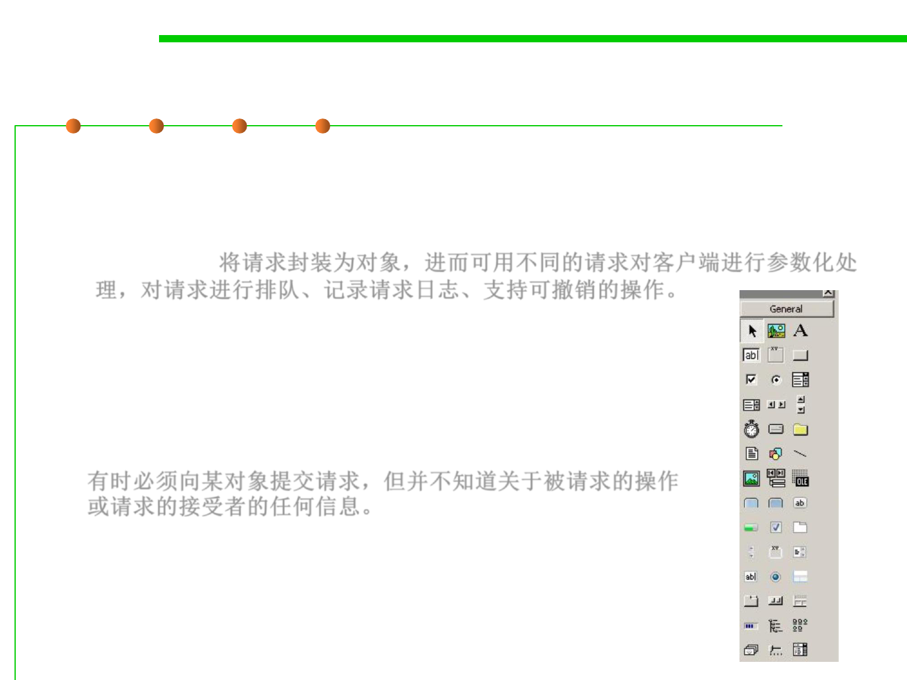

Command Pattern
6.2 Design Patterns for Maintainability
▪ Intent
– Encapsulate a request as an object, thereby letting you parameterize clients
with different requests, queue or log requests, and support undoable
operations. 将请求封装为对象，进而可用不同的请求对客户端进行参数化处
理，对请求进行排队、记录请求日志、支持可撤销的操作。
▪ Motivation
– Sometimes it's necessary to issue requests to objects
without knowing anything about the operation being
requested or the receiver of the request.
有时必须向某对象提交请求，但并不知道关于被请求的操作
或请求的接受者的任何信息。